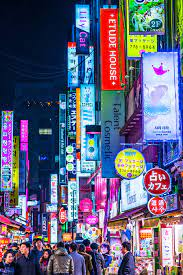
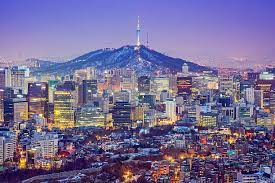
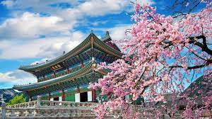
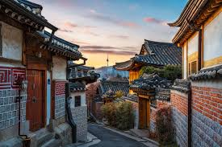
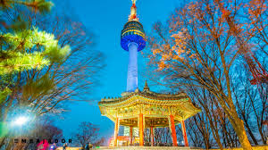
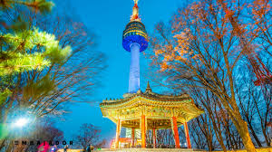

My Exciting Website!
Home
Blog
About Us
Our History
Contacts
An Exciting Blog Post
Seúl es la ciudad más grande de Corea del Sur así como la capital de este país, por lo que se ha convertido en un destino importante en el este de Asia.
Las atracciones de la ciudad son infinitas, pero muchos visitantes comienzan con algunos de los muchos palacios ubicados en Seúl. Comúnmente los recorridos turísticos incluyen Gyeongbok-gung y el Changdeok-gung que datan del siglo XV.
Andong es conocida como la Ciudad Capital de la Cultura Espiritual Coreana. Quizás la atracción principal en la ciudad es la Aldea Folklórica de Andong Hahoe, donde se ha preservado el patrimonio cultural local. Los amantes de la buena comida disfrutarán aún más su visita a Andong pues esta ciudad cuenta con todo tipo de especialidades locales, como el famoso plato de pollo y fideos llamado jjimdak. Además podrás degustar el soju, una bebida destilada nativa.
Gyeongju es una ciudad de más de 2,000 años y anteriormente fungió como capital de lo que alguna vez fue el Reino de Silla. Esta ciudad es un destino increíble que cuenta con varios templos y festivales culturales. Se recomienda comenzar el recorrido en el Templo Bulguksa, una verdadera obra maestra de la religión y el arte budista que data del siglo VIII.
Busan es la segunda ciudad más grande de Corea del Sur. También es un puerto importante y es famoso por sus hermosas playas y aguas termales. La Villa Cultural Gamcheon de Busan es conocida como la Santorini de Corea.
Photography
   
